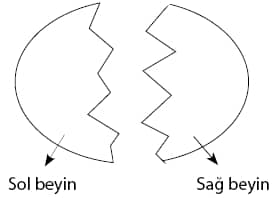

Yağmurluk, karanlık, yıkama
Girdiğim oda bir hayli genişti. Duvarları ve tavanı beyaz, zemindeki halı kahverengiydi. Nezih bir beğeniyle seçilmiş renklerdi. Tek sözcükle beyazı ifade ederiz, nezih olan beyazla, adi beyaz arasında dağlar kadar fark vardır. Pencere camları şeffaf olmadığından dışarının manzarasını göremedim, ama o camlardaki cılız ışığın kaynağı kesinlikle dışarıdaki güneşin ışıklarıydı. Öyleyse, yeraltında bir yerde değildim, dolayısıyla da asansör yukarı çıkmış demekti. Bunu anlayınca rahatladım. Tahminim doğruydu. Kadın koltuğa oturmam için işaret edince, odanın ortasındaki deri kaplı koltuğa oturup, bacak bacak üstüne attım. Ben koltuğa oturunca, kadın odaya girdiğimizden farklı bir kapıdan çıkıp gitti.
Odada mobilya namına neredeyse hiçbir şey yoktu. Koltuk takımının sehpasının üzerinde porselenden yapılma çakmak, kül tablası ve sigara kutusu sıralanmıştı. Sigara kutusunun kapağını açıp baktım, ama içinde bir sigara bile yoktu. Duvarlara resim, takvim ya da fotoğraf da asılmamıştı.
Pencerenin yanında kocaman bir çalışma masası vardı. Koltuktan kalkıp pencerenin önüne kadar gittim, o arada masanın üzerine de göz attım. Kütük gibi kalın tek parça tahtadan yapılmıştı ve ön tarafında büyük bir çekmece vardı. Masanın üzerinde çalışma lambası, Bic marka üç tükenmezkalem, masa takvimi ve çevresinde dağınık halde bir avuç ataş vardı. Masa takvimine göz attım; tarih doğruydu. İçinde bulunduğumuz günün tarihiydi.
Odanın köşesinde her yerde bulunur türden üç çelik dolap sıralanmıştı. Dolaplar odanın havasına pek uygun değildi. Basit işyeri dolaplarıydı. Ben olsam odaya uygun daha şık ahşap dolap koyardım, ama orası benim odam değildi. Yalnızca işim dolayısıyla oradaydım ve ister boz renkte çelik dolap olsun, ister açık pembe otomatik plakçalar, beni ilgilendirmiyordu.
Sol taraftaki duvarda gömme dolap vardı. Kapağı dikine ince uzun, katlanabilir türdendi. Odadaki mobilyalar bunlardan ibaretti. Saat, telefon, kurşunkalem açacağı ya da sürahi yoktu. Kitaplık olmadığı gibi, raf da yoktu. O odanın ne amaçla ve hangi işlevle kullanıldığını anlayamamıştım. Tekrar koltuğa oturup, bacak bacak üstüne atarak esnedim.
On dakika kadar sonra kadın geri döndü. Bana hiç dönüp bakmadan çelik dolaplardan birinin kapağını açarak, içinden çıkardığı siyah kaygan bir kütleyi kucakladığı gibi sehpanın üzerine getirdi. Bu kütle, özenle katlanmış bir yağmurluk ve uzun çizmelerdi. Bunların üstünde ise Birinci Dünya Savaşı’nda pilotların taktığı türden bir gözlük vardı. Orada olanlara hiç anlam verememiştim.
Kadın bana doğru bir şeyler söylediyse de, dudaklarını çok hızlı oynattığı için okuyamadım.
“Biraz daha yavaş konuşabilir misin? Dudak okumakta pek usta değilim” dedim.
Kadın bu kez dudaklarını yavaşça açarak konuştu. “Bunları elbiselerinin üstüne giy” dedi. Mümkünse yağmurluk gibi bir şey giymek istemezdim, ama şikâyet etmekle uğraşmamak için kadının direktifine uydum. Yürüyüş ayakkabılarımı çıkararak çizmeleri ayağıma geçirdim, gömleğimin üstüne de yağmurluğu giydim. Yağmurluk ağırdı; çizmeler ise bir, iki numara büyüktü, ama bunlardan da şikâyet etmedim. Kadın önüme gelerek, yağmurluğun düğmelerini boğazıma kadar ilikleyip, kapüşonunu da başıma geçirdi. Başlığı takarken, burnumun ucu pürüzsüz alnına değdi.
“Çok güzel bir koku” dedim, parfüm seçimini övmek amacıyla.
“Teşekkür ederim” diyerek, kapüşonun büzgüsünü alt tarafı dudaklarımın üstünü kapatacak şekilde iyice sıktı. Sonra da kapüşonun üzerinden pilot gözlüğünü taktı. Bu sayede yağmurda gezintiye çıkmış bir mumya halini almıştım.
Kadın sonra, gömme dolabın kapaklarından birini açarak, elimden çekiştirerek beni içeri sokup ışığı açtıktan sonra, kapağı arkamızdan kapadı. Kapağın iç tarafında giysi asma çubuğu vardı. Giysi asma çubuğu dediysem de, ortalıkta giysiden eser yoktu. Yalnızca birkaç boş askı ile naftalin keseleri sarkıyordu, o kadar. Sanırım sıradan bir elbise dolabı değildi bu; elbise dolabı süsü verilmiş bir gizli geçitti herhalde. Neden derseniz, bana yağmurluk giydirip elbise dolabına sokmalarının hiçbir anlamı olamazdı.
Kadın duvarın köşesindeki metal kolu tıkır tıkır oynatıyordu ve sonrasında tahmin ettiğim üzere karşı duvarın bir kısmı küçük otomobillerin bagajı genişliğinde aralanıverdi. İç tarafı zifiri karanlıktı, ancak, içeriden gelen nemli serin esintiyi rahatlıkla hissedebiliyordum. İnsana kendini pek de iyi hissettirmeyen bir esintiydi. Kesintisiz olarak ırmak sesine benzer bir gürültü de geliyordu.
“İçeride ırmak akıyor” dedi. Irmağın gürültüsü sayesinde kadının sessiz konuşmaları gerçeklik kazanmıştı. Aslında ses çıkarıyormuş da, sesi ırmağın gürültüsüne karışıp gitmiş gibiydi. Bu biraz da, onun söylediklerini daha rahat anlamaya başladığım hissine kapılmama da yol açtı. Tuhaf olmasına tuhaftı.
“Irmağı akıntının tersine, yukarı doğru izlersen, karşına şelale çıkacak. Şelalenin altından geç. Dedemin laboratuvarı şelalenin arkasında, iç tarafta. Oraya kadar ulaşırsan gerisini anlarsın zaten.”
“Oraya gittiğimde deden beni bekliyor olacak mı?”
“Evet” diyerek, bana ucu kayışlı irice bir el feneri uzattı. O zifiri karanlığa dalmak hiç içimden gelmiyordu, ama artık bunu dile getirmenin bir anlamı da yoktu. Kendimi cesaretlendirmeye çalışarak tek ayağımı duvarda açılan boşluktan içeri soktum. Sonra öne doğru eğilerek, başımı ve omuzlarımı içeri sokup, son olarak da diğer ayağımı içeri çektim. O bol gelen yağmurlukla tüm bunları yapmak bir hayli eziyetli olsa da, bir şekilde vücudumu gömme dolaptan duvarın arka tarafına geçirmeyi başarmıştım. Sonra gömme dolap tarafında kalan kıza baktım. Zifiri karanlığın içinde pilot gözlükleriyle bakınca çok hoş bir hali vardı.
“Dikkatli ol. Irmaktan ayrılma, yolunu hiç değiştirme. Dosdoğru gideceksin” dedi çömelip gözlerime bakarak.
“Dosdoğru ilerleyince şelale çıkacak” dedim, sesimi yükselterek.
“Dosdoğru ilerle, şelale” diye tekrarladı.
Denemek amacıyla, ses çıkarmaksızın dudaklarımı “Sela” diyecek şekilde oynattım. O da şirin bir gülümsemeyle “Sela” diye yanıtladı. Sonra seri bir hareketle geçit girişini kapattı.
Giriş kapandığı anda çevrem zifiri karanlıkla sarmalandı. İğne ucu kadar bir ışığın bile bulunmadığı, kelimenin tam anlamıyla zifiri karanlık içerisindeydim. Hiçbir şey göremiyordum. Yüzüme yaklaştırdığım kendi elimi bile göremiyordum. Sanki bir şey çarpmış gibi, bir süre orada öylece kalakaldım. Sanırım, naylon torbaya sarılıp da buzdolabına atılmış, sonra da kapak üzerine kapatılmış bir balıkla aynı çaresizliği yaşıyordum. İnsan hazırlıksız halde, kendini aniden mutlak bir karanlığın içine bırakılıvermiş bulunca, bir an vücudundaki tüm güç çekilmiş gibi oluyor. Kız girişi kapatacaksa, en azından haber vermeliydi.
Elimle yoklayarak el fenerinin düğmesini bulup basınca, özlemeye başladığım sarı ışık karanlığın içerisinde düz bir çizgi halinde beliriverdi. Önce fenerle ayaklarımı bastığım yeri kontrol edip, sonra çevresindeki zemine baktım. Durduğum yer, üç metrekare kadar genişlikte, zemini beton bir sahne gibiydi. Karşı tarafta dibi görünmeyen derinliklere doğru düz bir duvar iniyordu. Sahnenin bittiği yerde ne bir çit, ne de korkuluk vardı. Kızın bunları da önceden söylemesi gerekirdi diye, içten içe öfkelendim.
Sahnenin kıyısında aşağıya inen, alüminyumdan yapılma bir merdiven vardı. El fenerinin kayışını boynumdan geçirip astım, kaygan alüminyum merdiveni, her bir basamağını kontrol edermiş gibi usulca yoklayarak aşağıya indim. Aşağıya indikçe akan suyun sesi gitgide artarak, iyice netleşmişti. Bir binanın bir odasındaki gömme dolabın iç tarafında düz duvar gibi bir uçurum olsun, bunun dip kısmından da bir ırmak geçsin, böyle bir şeyi hiç duymamıştım. Üstelik tam da Tokyo’nun göbeğinde. Düşündükçe başım ağrımaya başlamıştı. Önce o tuhaf asansör, sonra ses çıkarmadan konuşan tombul kız, sonra da bu. Belki de işi kabul etmekten vazgeçip, evime dönmem gerekirdi. Hem çok tehlikeliydi hem de her şey doğallıktan uzaktı. Yine de, kaderime boyun eğerek uçurum duvarının aşağılarına doğru indim. Bunun bir nedeni işimle ilgili olarak sahip olduğum gurur, bir diğer nedeni ise o pembe takım elbiseli şişko kızdı. Nedendir bilmem, kız öylesine ilgimi çekmişti ki, işi kabul etmekten vazgeçerek çekip gitmek içimden gelmemişti.
Yirmi basamak kadar indiğim noktada durup kısa bir mola verdim; oradan on sekiz basamak daha indiğimde ise zemine ulaşmıştım. Merdivenin bittiği yerde durup tedbiri elden bırakmayarak fenerle çevremi aydınlattım. Bastığım yer sert kayaydı, az ilerisinde ise genişliği iki metre kadar olan bir ırmak akıyordu. El fenerinin ışığında ırmağın, yüzeyi bayrak gibi salına salına aktığını görebildim. Akıntı bir hayli hızlı gibiydi, ama ırmağın derinliği ve suyunun rengi anlaşılmıyordu. Anladığım tek şey, suyun soldan sağa doğru aktığıydı.
Bastığım yerleri iyice aydınlatarak, kaya zemin üzerinde ırmağın yukarısına yöneldim. Arada sırada vücudumun çevresinde bir şeyler dolaşıyormuş gibi oluyordu, ama ani reflekslerle feneri o tarafa çevirdiğimde hiçbir şey göremiyordum. İki yanımda dimdik yükselen duvar ve akıntıdan başka bir şey yoktu. Herhalde zifiri karanlığın ortasında kalıverince, sinirlerim aşırı hassaslaşmıştı.
Beş, altı dakika kadar yürüyünce tavanın alçaldığını suyun yankılanma sesinden anladım. Feneri başımın yukarısına tuttuysam da, karanlıkta tavanı görmeyi başaramadım. Sonra, kızın uyardığı gibi, iki taraftaki duvarlarda başka yöne giden yollar gibi açıklıklar karşıma çıkmaya başladı. Yoldan ziyade kaya yüzeydeki yarıklar demek belki daha doğru olur, ama oralardan da cılız akıntılar gelip ırmağa karışıyordu. Merak ederek o yarıklardan birine uğrayıp fenerle aydınlattığımda hiçbir şey göremedim. Yalnızca iç tarafın girişten daha geniş olduğu anlaşılıyordu. İçimde zerre kadar bile daha ileri gidip bakma istediği yoktu. Feneri sımsıkı kavrayıp, içimden kendimi evrimini sürdüren balıklar gibi hissederek, karanlığın içerisinde ırmağın yukarısına doğru yürümeye devam ettim. Kaya zemin kayganlaşmıştı; her adımımı dikkatli atmak zorundaydım. Böylesi bir zifir karanlık içerisinde ayağım kayıp da, ırmağa düşecek ya da feneri kıracak olursam iş artık iyice içinden çıkılmaz bir hal alırdı.
Tüm dikkatimi ayaklarıma yoğunlaştırdığımdan, ilkönce yürüdüğüm yöndeki cılız ışığın farkına varmadım. Bir an kafamı kaldırdığımda, ışık yedi, sekiz metre mesafeye kadar yaklaşmıştı. Gayriihtiyari feneri kapatıp, elimi yağmurluğun yırtmacından içeri sokarak, pantolonumun arka cebindeki çakımı çıkardım. Sonra el yordamıyla çakıyı açtım. Karanlık ve su sesi çevremi iyice sarmıştı.
Feneri kapatır kapatmaz, karşı taraftan gelen ışık da hareketsiz kaldı. Sonra ışık havada iki kez daire çizdi. Sanırım korkacak bir şey olmadığını işaretle anlatmaya çalışıyordu. Fakat tedbiri elden bırakmayarak, karşımdakinin hareket etmesini bekledim. Nihayet ışık yeniden hareket etmeye başladı. Sanki beyni aşırı gelişmiş devasa bir fosforlu böcek havada salına salına üzerime geliyormuş gibiydi. Sağ elimde çakıyı, sol elimde ise feneri sımsıkı kavrayarak, gözlerimi ayırmadan o ışığı izledim.
Işık üç metre kadar yaklaşınca durdu, sonra usulca yukarı doğru çıkarak tekrar durdu. Işık öylesine cılızdı ki, önce neyi aydınlattığını anlayamadım, ama dikkatlice bakınca bir insan yüzü olduğunu anladım. O yüz benimle aynı şekilde pilot gözlüğü takmış, siyah yağmurluk giymişti. Adamın elindeki spor malzemesi mağazalarında satılan türden bir cep feneriydi. Adam o fenerle yüzünü aydınlatarak bir şeyler söylemeye çalışıyordu, ama suyun sesinden ne dediğini hiç duyamadığım gibi, karanlık yüzünden dudaklarını da okuyamıyordum.
Dudak hareketleri “...onun için... yüzünden. Senin köşeye... iyi olmazdı, bununla...” diyormuş gibiydi, ama, bu kadarıyla ne söylediğini anlayabilmem mümkün değildi. Yine de, herhangi bir tehlike yok gibiydi; feneri açıp ışığıyla kendi yüzümü aydınlatıp, parmağımı kulağıma dokundurarak hiçbir şey duyamadığımı işaretle anlattım.
Adam durumu anlamış gibiydi; birkaç kez başını aşağı yukarı salladıktan sonra cep fenerini indirip ellerini yağmurluğunun cebine sokarak hışır hışır karıştırınca, akıntı aniden çekip gitmiş gibi çevremi saran gürültü hızla azaldı. O an bayılmak üzere olduğumu sandım. Bilincim zayıflamış da kafamın içindeki sesler silinip gidiyormuş gibiydi. Bunun üzerine, bayılmamı gerektiren şeyin ne olduğunu bilmemekle birlikte, kendimi yere düşmeye hazırlayarak, vücudumdaki tüm kaslara güç verdim.
Fakat, aradan saniyeler geçtiği halde bayılmadım. Yalnızca çevremdeki sesler azalmıştı.
“Karşılamaya geldim” dedi adam. Bu sefer, adamın sesini gayet net olarak duymuştum.
Başımı iki yana sallayarak, feneri koltukaltıma kıstırıp, çakının ağzını kapatıp cebime koydum. Zorlu bir gün olacağa benziyordu.
“Sese ne oldu?” dedim, adama.
“Evet, ses değil mi? Kafanızı ağrıtmış olmalı. Kıstım biraz. Kusura bakma. Artık sorun olmaz” dedi adam, başını birkaç kez aşağı yukarı sallayarak. Irmağın sesi, artık bir dere şırıltısına dönüşmüştü. “Haydi gidelim” dedi adam, seri bir hareketle sırtını dönerek. Sonra da orada yürümeye alışık adımlarıyla yürümeye başladı. Ben de fenerle bastığım yerleri aydınlatarak peşine düştüm.
“Sesi kıstığınızı söylediniz de, bu suni bir ses mi?” dedim, adamın sırtına doğru.
“Hayır değil” dedi adam. “Bu doğal bir ses.”
“Peki doğal sesler nasıl kısılabiliyor?” diye sordum.
“Doğrusunu söylemek gerekirse kısmıyorum” diye yanıtladı adam. “Arındırıyorum.”
Biraz tereddüt ettiysem de, daha fazla soru sormamaya karar verdim. Tanımadığım birine karşı, durmadan sorular sorabilecek bir durumda değildim. İşimi yapmak için oradaydım ve müşterimin sesi kesmesi ya da arındırması, hatta votka limon gibi karıştırmasının benim işimle alakası yoktu. Sonra sessiz sessiz yürümeye devam ettim.
Her ne şekilde olursa olsun, suyun sesinin arındırılması sayesinde, etraf sessizleşmişti. Lastik çizmelerin gıcırtıları bile duyulabiliyordu. Başımın üzerinde, birileri taşları birbirine sürtüyormuş gibi bir ses iki, üç kez duyulduktan sonra kesildi.
“Buralara kadar karanlık karası girdiğine dair izler vardı da, endişelenip seni karşılamak için buraya kadar geldim. Aslında, tipler buralara kadar asla gelmezler, ama nadiren olur böyle. Can sıkıcı bir durum” dedi adam.
“Karanlık karası...” dedim.
“Burada aniden karanlık karasıyla karşılaşmak senin için de hoş olmazdı” dedi adam, ağız dolusu bir kahkaha patlatarak.
“Eh, elbette” dedim, adamın havasına uymaya çalışarak. İster karanlık karası, isterse başka bir şeyle o zifiri karanlık yerde karşılaşmak istemiyordum.
“O yüzden karşılamaya geldim” dedi adam tekrar. “Karanlık karası tehlikelidir.”
“Nezaketiniz için teşekkür ederim” dedim.
Biraz ilerleyince, karşı taraftan açık kalmış musluk sesini andıran bir ses duyulmaya başladı. Şelaleydi. El fenerini şöyle bir tuttuğumdan, ayrıntılarını bilemiyorum, ama oldukça büyük bir şelale gibiydi. Eğer sesi arındırılmamış olsa, muazzam bir gürültü çıkarırdı herhalde. Önünde durunca, sıçrayan damlalarla pilot gözlüklerim tamamen kaplanıverdi.
“Bunun altından mı geçeceğiz?” diye sordum.
“Öyle” dedi adam. Sonra daha fazla bir şey söylemeden kararlı adımlarla şelaleye doğru ilerleyip, suyun içerisinde gözden kayboluverdi. Çaresiz, ben de telaşla ardından gittim.
Şans eseri bizim geçtiğimiz koridor, şelaleni su miktarının en az olduğu kısmına denk gelmişti, ama yine de, vücudumu alıp yere yapıştırabilecek kadar güçlüydü. Her ne kadar yağmurluk giymiş olsam da, her seferinde şelalenin altına dalmadan laboratuvara girememek, ne kadar iyi niyetli düşünmeye çalışsam da çok saçma geliyordu. Herhalde sırlarını korumak için öyle yapıyorlardı, ama yine de, daha mantıklı yollar da olsa gerek. Şelalenin altında yuvarlanıp, dizimi vücudumun olanca ağırlığıyla yere çarptım. Sesin arındırılmış olması yüzünden, ses ve o sesle birlikte gelen gerçekliğin dengesi tamamen yok olmuş, bu benim de dengemi yitirmeme yol açmıştı. Şelale diyorsak, şelaleye uygun bir gürültüsü de olmalı.
Şelalenin iç kısmında, ancak bir insanın geçebileceği genişlikteki mağaranın dip kısmında demir bir kapı vardı. Adam yağmurluğunun cebinden mini hesap makinesi gibi bir şeyi çıkarıp, kapının üzerindeki yuvaya yerleştirerek bir süre kurcaladı. Nihayet, kapı sessizce açılıverdi.
“İşte geldik. Buyurun, girin” diyen adam, önce benim girmemi bekledikten sonra, kendisi de içeri girerek kapıyı kilitledi.
“Zorlandınız değil mi?”
“Hiç de değil diyemeyeceğim” dedim, abartmamaya çalışarak.
Adam el feneri boynuna asılı, şapkası ve gözlükleri takılı halde güldü. Huffohhoh gibi, tuhaf bir gülüşü vardı.
Girdiğimiz oda havuzların soyunma odaları gibi kasvetli, genişçe bir odaydı ve raflarda benim giydiğimle aynı türden yarım düzine kadar siyah yağmurluk, lastik çizmeler ve pilot gözlükleri sıralıydı. Gözlüğü, yağmurluğu çıkarıp askıya astım, çizmeleri de rafa koydum. Son olarak da el fenerini duvardaki kancaya astım.
“Birçok zahmete girdiniz, kusura bakmayın” dedi adam. “Fakat tedbiri elden bırakamayız. Temkinsiz bir anımızı kollayan tipler, çevremizde dolaşıp duruyor çünkü.”
“Karanlık karası mı?” dedim, yem atmak amacıyla.
“Evet öyle. Karanlık karası yalnızca bir tanesi” dedi adam, kendi kendine başını yukarıdan aşağı sallayarak.
Sonra beni soyunma odasının ilerisindeki misafir odasına davet etti. Yağmurluğu çıkarınca, adam yalnızca nezih görünümlü ufak tefek bir ihtiyar haline gelivermişti. Şişman olduğu söylenemez, ama yapılı bir vücudu vardı. Yüzünün rengi sağlıklıydı; cebindeki çerçevesiz gözlüklerini çıkarıp taktığında savaş öncesindeki büyük devlet adamları gibi bir hale bürünmüştü.
Koltuğa oturmamı söyleyerek, kendisi de çalışma masasının arkasındaki koltuğuna oturdu. Oda, ilk başta girdiğim odayla sanki aynıydı. Halının rengi, aydınlatma gereçleri, duvar kâğıtları, koltuk... Her şey aynıydı. Koltuk takımının sehpasının üzerinde aynı sigara takımı duruyordu. Masanın üzerindeki masa üstü takvim, ataşlar aynı şekilde dağınık haldeydi. Dönüp dolaşıp aynı odaya geldiğimi hissettirecek kadar aynıydı her şey. Gerçekte öyle de olabilirdi de olmayabilirdi de. Zaten ben de, ataşların ne konumda dağıldığını tek tek belleğime yerleştirmiş değildim.
İhtiyar adam bir süre beni süzdü. Sonra ataşlardan birini alıp dümdüz ettikten sonra, tırnak etini düzeltti. Sol elinin işaretparmağının tırnak etini. İşini bitirince, dümdüz ettiği ataşı kül tablasına attı. Eğer dünyaya bir kez daha gelebileceksem ataştan başka her şey olabilirim, dedim içimden. Ne idüğü belirsiz bir ihtiyarın tırnak etini düzelttikten sonra, öylece kül tablasına atılıvermek hiç de hoş olmazdı.
“Edindiğim bilgilere göre, karanlık karası ve şifre çözücüler işbirliği yapmışlar” dedi ihtiyar adam. “Fakat bu tamamen birlik oldukları anlamına gelmez. Karanlık karası temkinlidir, şifre çözücülerse aceleci. O yüzden aralarındaki birlik şu an son derece kısıtlı. Fakat bu kötülüğe işaret. Buralara kadar gelmesine imkân olmayan karanlık karasının, etrafta fink atmaya başlaması da hiç hoş değil. Bu gidişle, bakarsın akşama kalmaz buralar karanlık karası doluverir. Bu da benim için büyük sıkıntı yaratır.”
“Haklısınız” dedim. Karanlık karasının ne olduğuna dair hiçbir fikrim yoktu, ama şifre çözücüler herhangi bir güçle işbirliğine girmişlerse, bu benim için de son derece kötü bir durumdu. Neden derseniz, biz ve şifre çözücüler hassas dengeler üzerinde mücadele ettiğimiz için, ufacık bir etkiyle her şey altüst olabilir. En başta, karanlık karasının ne olduğunu ben bilmiyorken, o tiplerin biliyor olması bile, dengenin çoktan bozulmuş olduğu anlamına gelir. Gerçi ben karanlık karasının ne olduğunu alt sınıf bir serbest çalışan olduğum için bilmiyorumdur, ama yukarılardaki tipler çok eskiden beri biliyor da olabilir.
“Eh, neyse bu bir yana, eğer senin için sorun yoksa hemen işe başla istersen” dedi ihtiyar.
“Olur” dedim.
“Ben ajansa en usta hesap uzmanını göndermelerini söylemiştim de, sen bir hayli tutuluyorsun herhalde. Herkes hakkında övgü dolu şeyler söyledi. Ustaymışsın, cesurmuşsun ve işini düzgün yaparmışsın. Takım çalışmasında uyum göstermek konusunda sorunlu olman bir kenara bırakılırsa, söylenecek laf yok.”
“Teveccühünüz” dedim. Alçakgönüllü davranmak istemiştim.
Fuhhohhoh diye gülüverdi ihtiyar, yine yüksek perdeden sesiyle. “Uyumlu ekip çalışmasının bir önemi yok gerçi. Önemli olan cesaret. Cesaret olmadıktan sonra, birinci sınıf bir hesap uzmanı olunamaz. Eh o ölçüde de, ücretin yüksek oluyor elbette.”
Söylemem gereken bir şey yoktu, sustum. İhtiyar yeniden gülerek, beni yan taraftaki çalışma odasına götürdü.
“Ben biyoloğum” dedi ihtiyar. “Biyoloji dediysem de, çalıştığım alan öylesine geniş ki, tek bir sözcükle ifade etmek bir hayli güç. Beyin fizyolojisinden tut, fonetik, dilbilim, hatta teolojiye varana kadar el atıyorum. Benim söylemem doğru olmayabilir, ama son derece yaratıcı ve önemli bir araştırma yürütüyorum. Şu anda yaptığımsa, ağırlıklı olarak memeli hayvanların palat yapıları üzerine bir araştırma.”
“Palat?”
“Damak yani. Damak yapısı. Damağın ne şekilde hareket edip, sesin nasıl çıktığı gibi konuları araştırıyorum. En iyisi şuna bir bak.”
Adam öyle dedikten sonra, duvardaki düğmeyi çevirip çalışma odasının ışığını açtı. Odanın dip tarafında kalan duvar tavana kadar raflarla kaplıydı ve o raflarda bilinen her tür memelinin kafatasları balık istifi sıralanmıştı. Zürafadan pandaya, hatta fareye varana kadar, aklıma gelebilecek her memelinin başı vardı orada. Sayıları üç, dört yüz kadardı. Elbette, insan kafatası da vardı. Beyaz, zenci, Asyalı ve Kızılderili olmak üzere kadın-erkek birer kafatası yan yana sıralanmıştı.
“Balina ve fil kafatası alt kattaki depoda. Bildiğin gibi, onlar bir hayli yer kaplıyor” dedi ihtiyar adam.
“Haklısınız” dedim. Gerçekten de, oraya konulacak bir balina kafatası odayı tamamen kaplardı.
Hayvanlar yoklama verir gibi ağızlarını iyice açmış, iki boş delikle karşı duvara bakacak biçimde duruyorlardı. Araştırma için gerekli modeller bile olsa, o tür kemiklerin çevreyi kaplamış olması insanda tuhaf hislere yol açıyor. Diğer raflarda, sayıları kafatasları kadar olmasa da, farklı türlerde, diller, kulaklar, dudaklar ve boğaz kıkırdakları kavanozlarda formol içerisinde sıralanmışlardı.
“Ne dersin? İyi bir koleksiyon değil mi?” dedi ihtiyar adam, neşeyle. “Âlemde pul toplayanlar olduğu gibi, plak koleksiyonu yapanlar da var. Bodrumlarda şarap biriktirenler olduğu gibi, bahçesine tank sıralamaktan hoşlanan zenginler de var. Ben de kafatası topluyorum. Âlemde her türlü insan var işte. Onun için keyifli zaten. Sence de öyle değil mi?”
“Haklısınız” dedim.
“Benim nispeten genç yaşlarımdan itibaren kafatası merakım vardı, o yüzden bıkmadan usanmadan topladım. Kırk yıl kadar oldu. Kemik dediğimiz şeyi tam olarak anlamak tahmin edilebileceğinden daha fazla zaman alıyor. Bu anlamda eti kemiği yerinde insanları anlamak daha kolay. Bu düşünce hep gelir, aklıma takılır kalır. Gerçi, senin gibi genç yaşlarda et kısmı daha ilgi çekici oluyor elbette” diyen ihtiyar adam yine fuhhohhoh diye kahkaha attı. “Benim durumumda ise, kemiklerden gelen sesi duyabilmem tam otuz yılımı aldı. Otuz yıl dediğimiz, az uz bir süre değil.”
“Ses?” dedim. “Kemiklerden ses mi geliyor?”
“Elbette” dedi ihtiyar adam. “Her bir kemiğin kendine özgü sesi vardır. Bir tanım getirmek gerekirse, gizli şifreler gibidir. Metafor olarak değil, sözcük anlamıyla, kemikler konuşur. Benim şimdi yürüttüğüm araştırma da o sinyalleri deşifre etmeyi amaçlıyor. Dahası, eğer bu deşifre edilebilirse, suni olarak kontrol edilmesi de mümkün olur.”
“Hmm” dedim, burnumdan. İşin ayrıntılarını anlayamamıştım, ama eğer ihtiyarın söyledikleri doğruysa, çok değerli bir araştırma olduğuna şüphem yoktu. “Değerli bir araştırma sanırım” dedim.
“Gerçekten de öyle” dedi ihtiyar, başını yukarıdan aşağı sallayarak. “İşte onun için, bu tipler bu araştırmamın peşinde. Amma da kulağı delik çıktılar. Benim araştırmamı kötü amaçlar için kullanmak niyetindeler. Eğer kemiklerden belleği çıkarabilmek mümkün olursa, işkence gereksiz hale gelir. Adamı öldürüp, etlerini sıyırarak kemiği temizlemen yeterli olur.”
“Feci bir durum” dedim.
“Şu anki aşamada neler getireceği noktasında değiliz. Şimdilik beyni çıkarmak, belleğe ulaşmak için çok daha verimli bir yol.”
“Neler söylüyorsunuz?” dedim. Vücuttan çıkarılanın kemik olmasıyla beyin olması arasında hiçbir fark yoktu.
“O yüzden senden hesap yapmanı istiyorum. Şifre çözücülerin gizlice deney verilerini çalamaması için” dedi ihtiyar, yüzünde ciddi bir ifadeyle. “Bilim hem kötü hem de iyi niyetle kullanıla kullanıla günümüz medeniyetini tehdit eder hale geldi. Bilimin bilim için var olması gerektiğine inanırım ben.”
“İnançlarınızı tam olarak bilemiyorum, ama” dedim. “Açığa kavuşturmak istediğim bir nokta var, prosedürle ilgili. Bu seferki iş talebi Sistem merkezinden değil, resmi ajanstan da değil, doğrudan sizden geldi. Bu pek görülmeyen bir durum. Daha açık konuşmam gerekirse, iş kurallarını ihlal ediyor olabiliriz. Eğer ihlal ediyorsak da, ben ceza alırım, ehliyetime de el konulur. Bunu biliyorsunuz değil mi?”
“Elbette biliyorum” dedi ihtiyar. “Endişelenmekte haklısın. Fakat bu seferki kuralına uygun olarak ‘Sistem’ üzerinden yapılmış bir talep. Yalnız, gizliliği korumak için normal prosedürden geçirmeksizin, ben doğrudan seninle irtibata geçtim. Senin ceza alman gibi bir durum söz konusu değil.”
“Garanti edebilir misiniz?”
İhtiyar masasının çekmecesini açarak, bir doküman dosyası çıkarıp bana uzattı. Ben de alıp açtım. Gerçekten de, dosyada Sistem’e ait resmi talepname de vardı. Belge şekline uygun olduğu gibi, imzalanmıştı.
“Tamam, o zaman” diyerek, dosyayı geri verdim. “Benim sınıfım çift-ölçü, sorun olmaz umarım. Çift-ölçü dediğimiz…”
“Standart ücretin iki katı demek. Sorun yok. Bu seferki işte ona bir de ikramiye ekleyerek üç-ölçü yapalım.”
“Çok cömertsiniz.”
“Bizim için önemli bir iş bu . Hem de şelalenin altından geçtiniz. Fuhhohhoh” dedi ihtiyar.
“Şu rakamları bir görelim” dedim. “Formüle rakamları gördükten sonra karar verelim. Bilgisayar düzeyindeki hesapları kim yapacak?”
“Bilgisayar hesapları için benimkini kullanalım. Sen de o aşamanın öncesi ve sonrasını halledersin. Olur mu?”
“Olur. Ben de bir zahmetten kurtulmuş olurum.”
İhtiyar koltuğundan kalkıp, bir süre arkasındaki duvarda bir yerleri kurcaladı. Sıradan bir duvar gibi duran yerde aniden bir kapı açılıverdi. Her şey düşünülmüştü. İhtiyar oradan başka bir dosya çıkararak, kapıyı kapattı. Kapı kapanınca, orası tekrar hiçbir özelliği olmayan bir duvar halini alıverdi. Dosyayı alıp, yedi sayfayı bulan ayrıntılı rakamları okudum. Rakamlarda göze çarpan bir sorun yoktu. Sadece rakamlardı işte.
“Bu düzeyde bir şey için yıkama yeterli olur” dedim. “Bu ölçüdeki sıklık benzerliği söz konusu olduğunda, sanal köprü kurulmasından endişe etmek gereksiz olur. Elbette teorik olarak mümkün, ama o sanal köprünün doğruluğunu ispat edemeyecekleri gibi, ispat edemedikleri sürece de sapmalar yüzünden yakayı ele verirler. Bu, pusula olmadan çöl geçmek gibi olur. Musa başarmış gerçi.”
“Musa denizi geçmişti.”
“Çok eski bir hikâye. Benim dahil olduklarım arasında, bu düzeydeyken şifre çözücülerin sızmayı başarabildiği tek bir örnek bile yok.”
“Öyleyse, tek tuzağın yeterli olduğunu mu söylemek istiyorsunuz?”
“İkili tuzakta risk artar. Doğru, sanal köprü yoluyla sızma olasılığını sıfıra indirir, ama bu aşamada akrobasiden farksız olur. Tuzak süreci henüz tam olarak sabitlenmiş değil. Araştırma aşamasında olduğu için.”
“Benim derdim ikili tuzak değil” dedi ihtiyar. Yine ataş ile tırnak etini düzeltmeye başlamıştı. Bu kez sol elinin orta parmağıydı.
“Ne peki?”
“Karma işlemi. Benim söylemek istediğim karma işlemi. Senden beyin yıkama ve karma işlemi yapmanı istiyorum. Seni bunun için çağırdım.”
“Anlayamıyorum” diyerek, üst üste attığım bacaklarımın yerini değiştirdim. “Nasıl oluyor da, karma işleminden haberiniz olabiliyor? Bu çok gizli tutulur ve dışarıdan insanların bilmesi mümkün değildir.”
“Ben biliyorum işte. Sistem’in üst düzey adamlarıyla aramda çok sağlam bağlar vardır.”
“Öyleyse o bağları kullanarak soruşturun. Bakın, şu an karma sistemi tamamen dondurulmuş durumda. Neden olduğunu bilmiyorum. Herhalde bir sorun çıkmıştır. Her neyse, neticede karma sisteminin kullanılmasına izin verilmiyor. Eğer kullandığım anlaşılırsa hafif bir cezayla atlatamam herhalde.”
İhtiyar talep belgelerinin bulunduğu dosyayı bana tekrar uzattı.
“Son sayfaya bakınız. Karma sisteminin kullanılması için iznimiz var.”
Söylediği gibi, son sayfayı açıp baktım. Evet, gerçekten de karma sisteminin izin belgesi vardı. Birkaç kez okudum, gerçekti. İmzaların beşi de belgedeydi. İdareci sınıfın ne düşündüğü hakkında hiçbir fikrim yoktu. Bir çukuru kazınca haydi bakalım doldur orayı, derler; doldururusunuz, bu kez de aynı yeri kaz bakalım, derler. Sıkıntıya katlananlar hep benim gibi, görev yerinde çalışanlar olur.
“Bu talep belgelerini bir takım olarak renkli fotokopi çıkarın lütfen. Eğer elimin altında olmazsa, bir sorun çıktığında ben çok sıkıntılı bir duruma düşerim.”
“Elbette” dedi ihtiyar. “Elbette bir takım fotokopi veririm. Endişelenecek bir şey yok. Yaptığımız işlem, tek bir açığı bile olmayan resmi bir işlem. Ücretin yarısını bugün, diğer yarısını da iş bittiğinde öderim. Olur mu?”
“Olur. Beyin yıkamayı bugün burada yaparım. Sonra yıkanmış sayıları alıp evime döner, karma işlemini orada yaparım. Karma işlemi için birçok şey gerekiyor çünkü. Sonra karma işlemi tamamlanmış veriyi alır buraya getiririm.”
“Üç gün sonra öğlene kadar mutlaka gerekiyor, ama?”
“Yeterli” dedim.
“Lütfen geç kalmasın” diye tembih etti, ihtiyar adam. “Geç kalırsak, bu bir felaket olur.”
“Dünya mı batar, yoksa?” diye sordum.
“Bir anlamda evet” dedi ihtiyar adam, kelimelerin üstüne basa basa.
“Sorun yok. Şimdiye kadar, süreyi bir kez bile geçirmedim” dedim. “Mümkünse çaydanlıkta sade kahve ve buzlu su rica edeceğim. Sonra basitçe atıştırabileceğim bir akşam yemeği. Sanırım uzun bir iş olacak.”
Tahmin ettiğim gibi uzun sürdü. Sayılar dizisi tek başına nispeten basitti, ama dosya kurgusunun basamak sayıları fazla olduğundan, hesap göründüğünden daha zahmetli oldu. Verilen sayıları sağ beynime yerleştirir, tamamen farklı göstergeler haline getirdikten sonra sol beynime aktarır, sol beynime aktardığım o göstergeleri ilk baştakinden tamamen farklı sayılara dönüştürerek daktilo ederim. Bu, beyin yıkama dediğimiz işlemdir. Çok basite indirgeyerek söylemek gerekirse bundan ibarettir. Her hesap uzmanının dönüşüm kodları farklıdır.
Bu kodların rasgele dağılım çizelgesinden tamamen farklı olan yanı şematik olmasıdır. Şöyle ki, anahtar sol ve sağ beyinlerin (Bu elbette keyfi bir ayrım. Gerçekte o şekilde iki parça değildir) ayrım şeklinde gizlidir. Bir şema çizmek gerekirse aşağıdaki gibidir.

Kısacası, buradaki zikzaklı kısım tam olarak uyuşmadığı sürece, ortaya çıkan sayıları en baştaki haline getirmek imkânsızdır. Fakat şifreciler, bilgisayardan çaldıkları sayılar üzerinde ters köprü kurarak deşifre etmeye çalışırlar. Nasıl mı? Sayıları analiz edip, hologram üzerinde bu zikzağı yeniden oluşturarak. Bunu başardıkları olduğu gibi, başaramadıkları da olur. Bizim tekniğimiz ne kadar gelişirse, onlar da karşı teknikler geliştirirler. Biz verileri koruruz, onlar verileri çalar. Klasik hırsız-polis oyunudur.
Şifreciler illegal yollardan ele geçirdikleri verileri çoğunlukla bilgi karaborsasına aktararak muazzam gelirler elde ederler. Daha kötüsü ise o bilgiler içerisinde en önemli olanlarını kendi ellerinde tutarak, kendi örgütlerinin çıkarları doğrultusunda etkin bir şekilde kullanırlar.
Bizim örgütümüz genel olarak Sistem adıyla bilinir; onlarınki ise Fabrika. Sistem aslında özel bir holdingdir, ama önemi arttıkça, yarıresmi bir hal almıştır. Kurgu açısından Amerika’nın Bell şirketine benzediğini söyleyebiliriz. Biz en uçlardaki hesapçılar olarak mali müşavirler ve avukatlar gibi işimizi serbest meslek şeklinde yürütürüz, ama devletin onayladığı bir ehliyetimizin olması gerekir ve Sistem ya da Sistem’in kabul ettiği resmi ajanslardan gelen işler dışında çalışmayız. Bu Fabrika’nın tekniklerimizi kötü amaçlarla kullanmaması için bir önlemdir ve bu kuralın dışına çıkanlar cezalandırılarak, ehliyetlerine el konulur. Fakat bu önlemin doğru olup olmadığını, ben bilemiyorum. Neden derseniz, ehliyetine el konulan hesapçılar bir biri ardına Fabrika’ya karışarak yeraltına inerler ve şifreciler haline gelirler.
Fabrika’nın nasıl bir yapıya sahip olduğunu bilemiyorum. Başlangıçta ticari işletme olarak doğmuş, ani bir gelişme göstermiştir. “Veri mafyası” olarak adlandıranlar da vardır. Çok farklı yeraltı örgütleriyle kökten bağlı olduğundan, gerçekten de mafya oldukları söylenebilir. Onların mafyayla farklı oldukları nokta, bilgiden başka bir şeyle ilgilenmemeleridir. Bilgi temizdir ve para eder. Onlar gözlerine kestirdikleri bilgisayara mutlaka girerler ve hedefledikleri bilgiyi çalarlar.
Bir çaydanlık dolusu kahveyi içerken, beyin yıkama işlemini sürdürdüm. Bir saat çalışıp yarım saat dinlenerek. Bu bir kuraldır zaten. Bu yapılmayacak olursa sol beyin ve sağ beyin arasındaki kenetlenme dengesizleşir, ortaya çıkan sayılar da bulanıklaşır.
O yarım saatlik dinlenmelerim sırasında ihtiyarla havadan sudan konuştuk. İçeriği her ne olursa olsun, konuşmak beyin yorgunluğunu atmak için en iyi yoldur.
“Bunlar neyle ilgili sayılar?” diye sordum.
“Deneylerin ölçüm sayıları” dedi ihtiyar. “Benim son bir yıllık araştırmamın sonuçları. Her bir hayvanın kafatası ve damak hacminin üçboyutlu görüntülerinin sayılara dökülmüş hali ve çıkardıkları seslerin üç unsura ayrılmış halde sayılaştırılmasından oluşuyor. Az önce, benim kemiklere özgü sesi duyabilmem için otuz sene geçtiğini söylemiştim ya, bu hesaplar tamamlanınca biz, yalnızca deneyimsel olarak değil, teorik olarak da o sesi duyabilir hale geleceğiz.”
“Sonra da, suni olarak kontrol etmek mümkün mü olacak?”
“Aynen öyle” dedi ihtiyar.
“Suni olarak kontrol edildiğinde, ne olacak peki?”
İhtiyar dilinin ucunu dudaklarında gezdirerek, bir süre sessiz kaldı.
“Birçok şey olacak” dedi biraz sonra “Gerçekten de, birçok şey. Neler olacağını ben söyleyemem, ama senin aklına hayaline bile gelmeyecek şeyler olacak.”
“Sesin arındırılması da bunlardan biri sanırım” dedim.
İhtiyar fuhhohhoh diye keyifle güldü. “Evet, evet öyle. İnsan kafatasına özgü sinyallere uygun olarak, ses silmek ya da artırmak mümkün. Her bir insanın kafatası yapısı farklı olduğu için, tamamen arındırmak mümkün olmaz, ama bir hayli küçültülebilir. Basite indirgeyecek olursak, ses ve yankı titreşimlerinin aynı anda hareket etmesi sağlanabilir. Ses kısmı araştırma sonuçlarım içerisinde en zararsız olanı.”
En zararsız olanı buysa, gerisini tahmin etmek zor değildi. İnsanların kafalarına göre sesleri kısıp, artırdıkları bir dünyayı gözümün önüne getirerek, kısa bir hayal kırıklığı yaşadım.
“Sesle oynamak, hem sesin çıkarılması aşamasında, hem de duyulması aşamasında mümkün” dedi ihtiyar. “Yani, az önceki gibi, duyma algılaması içerisinden yalnızca su sesini kesebilmek mümkün olduğu gibi, insan sesini kesebilmek de mümkün. İnsan sesi bireysel bir durum olduğundan, yüzde yüz kesebilmek mümkün.”
“Bunu kamuya açıklayacak mısınız?”
“Hayatta olmaz” dedi ihtiyar, elini iki yana sallayarak. “Bu kadar ilginç bir şeyi başkalarıyla paylaşmaya niyetim yok. Kendi eğlencem için yapıyorum bu araştırmayı.”
İhtiyar tekrar fuhhohhoh diye güldü. Ben de güldüm.
“Araştırma sonuçlarımı açıklarken, olabildiğince bilimsel düzeyle sınırlamak niyetindeyim. Zaten sesbilim gibi bir alan neredeyse hiç kimsenin ilgisini çekmez” dedi ihtiyar. “Üstelik ortalıkta gezen geri zekâlı bilim adamı müsveddelerinin benim araştırmamın önemini anlayabileceklerini de sanmıyorum. Şimdi bile, beni bilim camiasında adam yerine koymuyorlar.”
“Fakat şifreciler geri zekâlı değildir. O tipler analiz konusunda dâhi düzeyindedir. Onlar, olasılıkla araştırmanızın her ayrıntısını süzeceklerdir.”
“Bunu ben de biliyorum. Onun için veri sürecini tamamen gizleyerek, işin yalnızca teori kısmını açıklayacağım. Bu durumda onların işin özünün farkına varmalarına imkân yok. Herhalde bilim camiasında beni dinleyen olmaz. Gerçi bunun hiçbir önemi yok. Yüz yıl sonra teorim ispatlanacaktır. Bu bana yeter de artar bile.”
“Hmm” dedim, burnumdan çıkan nefesle karışık.
“O yüzden, her şey senin yıkama ve karma işlemine bağlı.”
“Şimdi anlaşıldı” dedim.
Sonrasında bir saat süreyle, tüm yoğunluğumu hesap yapmaya verdim ve tekrar mola saatim geldi.
“Bir şey sormak istiyorum” dedim.
“Buyur, sor” dedi ihtiyar.
“Girişteki genç kız vardı ya, şu pembe takım elbiseli, etine dolgun...” dedim.
“O benim torunum” dedi ihtiyar. “Çok iyi bir kızdır. Genç yaşına rağmen araştırmamda bana yardım ediyor.”
“Benim sorum da bununla ilgili. O doğuştan mı konuşamıyor, yoksa sesini mi kıstınız? Sormak istediğim buydu.”
“Eyvah!” dedi ihtiyar, dizini tokatlayarak. “Unutup gittim. Ses kesme deneyinden sonra, eski haline getirmeyi unutmuşum. Eyvah, eyvah. Hemen gidip, eski haline getirmem gerek.”
“Öylesi daha iyi olur” dedim.